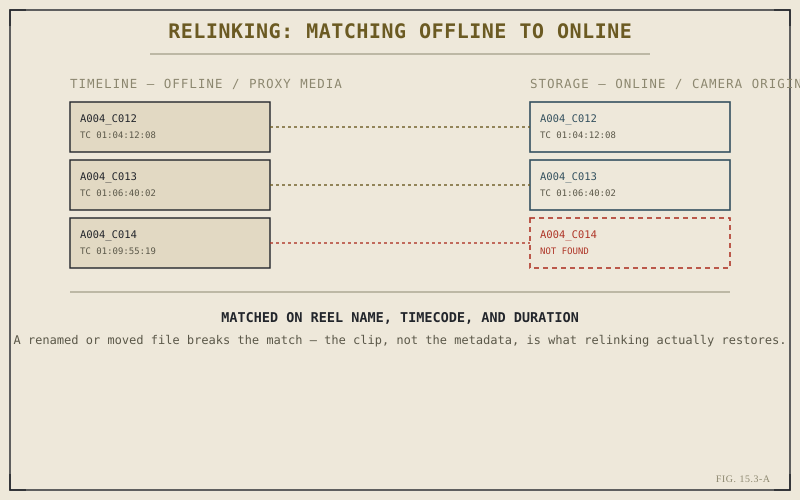

Chapter 15.2 covered audio quietly slipping out of alignment with picture. This chapter covers a blunter version of the same underlying idea: a clip losing its connection to the media file behind it entirely, showing up as a red or offline thumbnail where a shot used to be. Conforming and relinking are the process of restoring that connection — and, done properly, of moving from lightweight offline media to full-resolution camera originals without disturbing a single cut already made.
What Conforming Actually Means
A Resolve timeline doesn't contain video — it contains references to media files, along with instructions about which portion of each file to show and for how long. Conforming is the process of matching those references against a specific set of media, most often moving from lightweight offline or proxy files, covered back in Chapter 2.5, to full-resolution camera originals once a cut is picture-locked. Every edit decision made against the offline media carries over exactly, because the timeline was never actually built from pixels — it was built from references that the online media now satisfies at full resolution instead.
Why Links Break in the First Place
A link breaks whenever the reference and the actual file location stop agreeing — a file renamed after Chapter 2.3's import stage, a drive reorganized or relabeled, footage moved to long-term storage as part of the archiving process Chapter 2.8 described. None of these represent damage to the media itself; the footage is generally fine, exactly where it's always been, on a drive Resolve simply isn't looking at anymore. That distinction matters practically, since it means most relink situations are a bookkeeping problem, not a data-loss one.

The clip on the timeline never held pixels — only a reference the relink process re-satisfies.
What Resolve Actually Matches On
Relinking doesn't search for a file with the exact same name in the exact same folder — it searches for a file whose underlying metadata matches: reel name, timecode, and duration are the primary fields Resolve checks, in roughly that order of reliability. This is why a folder full of footage can be pointed at broadly, rather than needing an exact per-clip path, and why footage renamed at the filename level often still relinks successfully, since the metadata inside the file didn't change even though the name on disk did.
A broken link almost never means lost footage — it means a reference and a file location have stopped agreeing. Relinking restores the agreement; it doesn't recover anything that was actually gone.
Partial Relinks and Missing Media
It's common for a relink pass to succeed on most of a project's media while a handful of clips remain stubbornly offline — genuinely missing, deleted, or on a drive not currently connected. Resolve keeps these as clearly marked offline placeholders rather than silently dropping them from the timeline, which matters: a timeline with a few red offline clips is still an accurate, editable record of the cut, and can keep being worked on around the missing pieces while those specific files get tracked down separately.
Keeping Proxies and Originals Aligned
The best defense against a difficult conform is discipline established well before it's needed: keeping proxy and original media generated together, from the same import pass Chapter 2.5 described, rather than proxies created ad hoc later from files that may have since moved. A project where every proxy can be traced back to a specific, still-connected original conforms in minutes. One where that relationship was never tracked carefully can turn a routine conform into a multi-hour reconciliation project.
Relinking is mechanical once the underlying cause is understood — matching broken references back to real files by reel name, timecode, and duration, not searching blindly for identical filenames. Chapter 15.4 moves to a more serious case in the same general territory: what happens when it isn't just a link that's broken, but the project file itself, after a crash or an unexpected close.
Key Concepts to Remember
- A timeline holds references to media, not the media itself — conforming re-satisfies those references, often at higher resolution.
- Broken links are usually a bookkeeping problem — a renamed file or a moved drive — not evidence the footage itself is damaged.
- Relinking matches on reel name, timecode, and duration, not exact filenames or folder paths.
- Generating proxies and originals together at import, per Chapter 2.5, is what keeps a later conform fast rather than painful.
Cross-References Forward
| → Ch. 15.4 | Crashes, Corruption, and Recovery — from a broken link to a broken project file itself. |
| → Ch. 2.5 | Revisit proxies and optimized media, the workflow a smooth conform depends on being set up correctly. |
| → Ch. 2.8 | Revisit backing up and archiving, a common source of the drive moves and reorganizations that break links. |